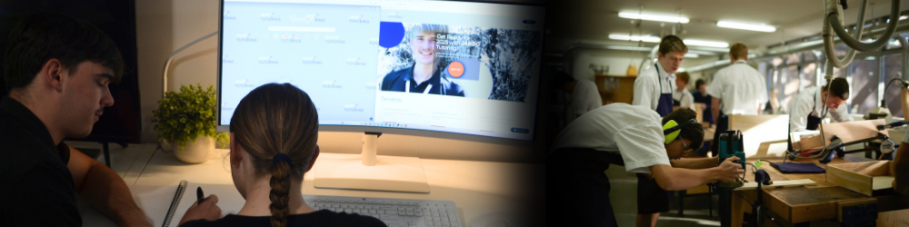

About

Brief
View DegreeHi, my name is Jae Foster and I'm currently studying to become a high school TAS teacher. I'm currently studying a Bachelor of Education (Secondary)/Bachelor of Arts (Design Innovation and Technologies) at the Australian Catholic University. I have a passion for design, technology, and helping others learn in creative and hands-on ways. I'm also a Student Learning Support Officer, where I work closely with students of all abilities to support their educational and emotional needs in the classroom. Finally, I am a NSW Department of Education Scholarship recipient for the teach.Rural scholarship.
Background
View Tutoring WebsiteOutside of university and school, I run my own tutoring business, where I manage tutors and support students in Maths, English, and assignment planning. I use the NSW curriculum to design lessons and create tailored resources that align with syllabus outcomes. I enjoy developing interactive learning tools and games that make education fun and accessible for all learners. I am skilled at adapting to different student needs and differentiating instruction to ensure every student can succeed. I believe in building strong, positive relationships with students and making learning engaging, relevant, and achievable.

Favourite Subjects
Design & Tech
Timber
Digital Tech
Practicum Placements
| School | Subjects Taught | Year Level | Term |
|---|---|---|---|
| Chatswood High School | Stage 4 & 5 Digital Technologies | Years 7 & 9 | Term 2, 2024 |
| Ku-ring-Gai High School | Stage 5 Food Technology, Stage 5 Industrial Technology - Timber | Years 7 & 9 | Term 4, 2024 |
| Armidale Secondary College | Stage 4 Digital Technologies, Stage 5 & 6 Industrial Technology Timber | Years 7, 9, 10 & 12 | Term 2-3, 2025 |
Teaching Philosophy
As a future teacher, I believe that all students are capable of growth when they feel safe, respected, and meaningfully engaged. My classroom management philosophy is built around the belief that behaviour is a form of communication, and that creating a predictable, inclusive, and relational environment is absolutely essential for promoting both wellbeing and academic success. I see my role as a teacher, as not only an instructor but also a facilitator of positive peer relationships, a model of respectful interactions, and a dedicated support for diverse student needs. My approach is built around the incorporation of Positive Behaviour Support (PBS), Bill Rogers' Eclectic Model of Decisive Discipline, and elements of Choice Theory. These frameworks work along side one another in promoting proactive, structured, and student-centred behaviour support. PBS provides a tiered model for promoting positive behaviour and responding to misbehaviour with consistency and equity, while Rogers' model adds practical strategies for maintaining calm authority and respectful correction to behaviour. Choice Theory informs my focus on student agency, which helps learners understand the link between their choices and consequences in a supportive way. Together, these models support the development of safe, engaging classrooms that ultimately prioritise wellbeing, connection, and accountability.